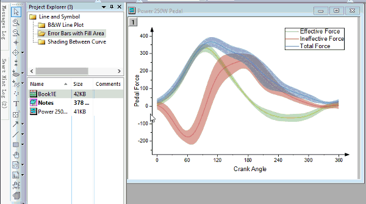
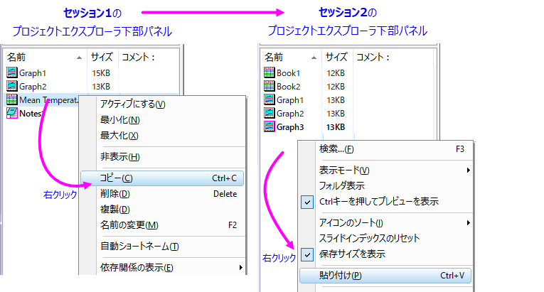

FAQ-427 複数のOriginプロジェクトからのデータを組み合わせるにはどうしたらよいでしょうか？
Import-data-from-Origin-OPJ
最終更新日：2023/5/17
異なるOriginファイルからのデータを統合するには、いくつかの方法があり、ニーズに合わせて選択できます。
プロジェクトフォルダをOriginのセッション間でコピー/貼り付け
- Originセッションを2つ実行し、それぞれで異なるプロジェクトを開きます。
- 片方のセッションでプロジェクトエクスプローラフォルダを右クリックして、コンテキストメニューからコピーを選択します。
- もう一方のOriginセッションに移動し、フォルダを右クリックしてコンテキストメニューから貼り付けを選択します。これで、フォルダ内のウィンドウごとサブフォルダとして追加されます（ヒント：この変更後、現在のプロジェクトを忘れずに保存してください）。

| Note: 「セッション」と「インスタンス」という言葉は同じ意味で使用しています。同時に開いた2つのプロジェクト間でデータを転送できるように、Originプログラムを2回実行して開始します。
|
 | プロジェクトフォルダを2番目のプロジェクトに貼り付けたら、現在のセッションで作業するウィンドウのみを結合する新しいフォルダを作成できます。プロジェクトエクスプローラを参照してください。
|
OriginワークブックウィンドウをOriginのセッション内/セッション間でコピー/貼り付け
- プロジェクトエクスプローラ (PE) を開き、下部パネルで目的のワークブックを右クリックし、コピーを選択します。
- 同じプロジェクト (セッション内) 内の別のフォルダを強調表示するか、別のプロジェクト (セッション間) のフォルダを強調表示し、PEの下部パネルの空白スペースで右クリックし、貼り付けを選択します。
- 
他のプロジェクトまたはワークシートウィンドウからデータをインポート
他のプロジェクト内の選択したワークシートデータをインポートできます。
- ワークブックがアクティブな状態で、データ：ファイルに接続：Originファイルを選択してOriginコネクタを開きます。
- プロジェクトファイル (.OPJ/.OPJU) を参照します。左パネルでプロジェクトファイル内の全シートがリスト表示されます。シートを選択すると、右側のパネルにシート内にある列のリストが表示されます。
- 選択したシートをダブルクリックして下部パネルに追加し、OKをクリックしてインポートします。
- インポート後は、データナビゲータでいつでも他のシートをインポートできます。
他のプロジェクトの全データを付加
この方法の場合、プロジェクト内のデータを選択的にインポートできません。開いているOPJファイルに、他のOPJファイルの全ての内容を付加する場合に使用します。
- ファイル：プロジェクトの追加を選択するか、プロジェクトエクスプローラのフォルダ上で右クリックして、プロジェクトの追加を選択します。追加するファイルのために新しいフォルダを作成するか、現在のフォルダに追加するか尋ねられます。いずれの場合も、追加されたファイルのサブフォルダ構造は保持されます。
Originウィンドウファイルを開く
予め保存した個別のワークブック（OGW）または、グラフウィンドウ（OGG）をOPJファイルで開く方法です。
- メニューから、ファイル：開く（またはファイル：最近使ったブックか最近使ったグラフ）を選択し、Originウィンドウファイルを参照します。また、ウィンドウファイルをドラッグ＆ドロップして開くこともできます。
この方法でgraphウィンドウを開いた場合、データも一緒に取り込みます。データプロット上で右クリックして、 ワークシートworksheetNameを開くを選択、または、プロット上でダブルクリックして作図の詳細を開き、ワークブックボタンをクリックします。
キーワード:Origin OPJ, データインポート, ウィンドウファイル, 追加, プロジェクトエクスプローラ,